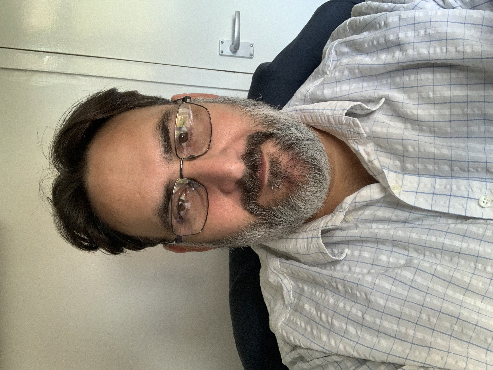

Steven Bozas

Farnham
Surrey
United Kingdom
Email: steven@bozas.co.uk
Summary
An experienced IT Professional with a broad base of business experience in both commercial (All Verticals) and public sectors.
Key skills in the software development lifecycle, hardware and software troubleshooting and management, and a good understanding of the software lifecycle.
A practical approach to problem solving. The invaluable ability to manage relationships with clients and users.
A Customer focused professional able to understand business challenges and identify solutions for them.
Summary of Qualifications
- VCP - VMware Certified Professional - Desktop Management 2023
- AWS Certified Cloud Practitioner
- Android Enterprise Certified Associate
- Cylance Security Professional
- Splunk Fundamentals
- CISSP (Certified Information Systems Security Professional)
- ITIL Foundation version 3
- PRINCE2 Foundation
- ISEB/BCS Foundation & Intermediate Certificate in Software Testing
- MCSE, MCP, MCP+I
- Bookkeeping Diploma (Damelin)
- Business Management I&II (Potchefstroom University South Africa)
- N3 Computer Science (South Africa)
Professional Experience
Skills
- Consultative Selling
- Teamwork
- Technical Support
- Web Services.
- Programming/Scripting Languages Including Html5, CSS, JavaScript, VBA, C++, PHP, Java.
- Enterprise Mobility Management (Device Management, Application Management, Content Management)
- Digital Rights Management.
- PKI and Certificates.
- Software Asset Management.
- Desktop and Server Management.
- ITIL and Service Desk Management.
- Backup & Security Management.
- Windows, Mac and Linux(Redhat, Ubuntu, Debian, CentOS) Operating Systems.
- Database Servers. eg. SQL, mySQL, Oracle
- Web Servers (eg.Apache/IIS).
- Exchange (And other Email Servers).
- Adobe creative cloud (Dreamweaver/Photoshop/Adobe Muse/InDesign)
- Virtualisation.
Interests
Tennis - both coaching and playing to a high standard (top twenty in US collegiate league), Movies, Reading, Web Design, Computer Games.